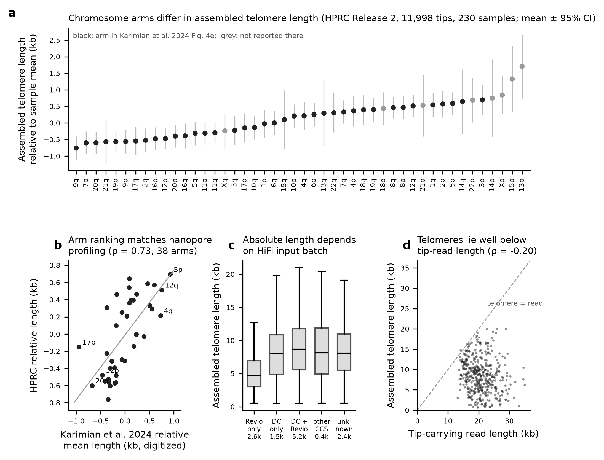
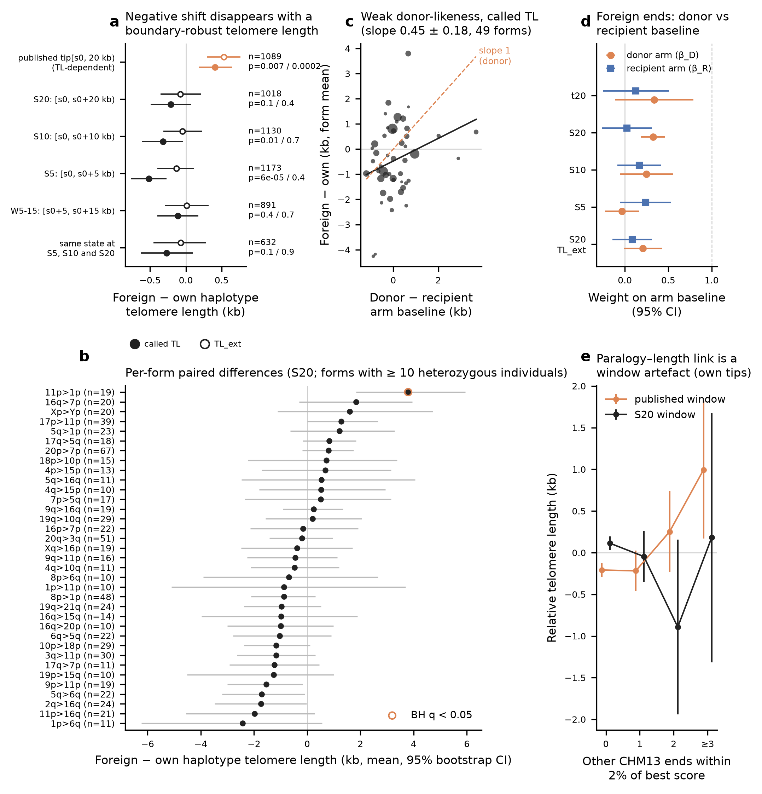
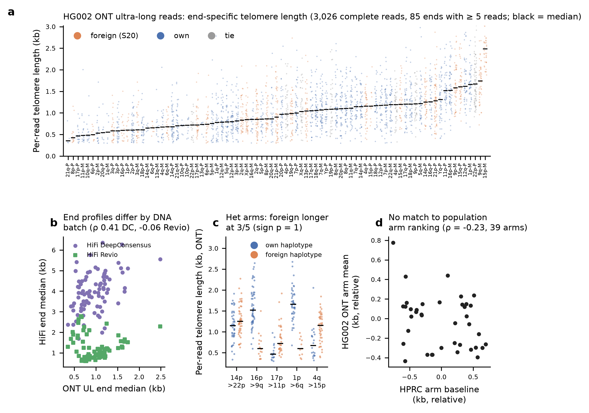

Findings › Telomere length and the terminal allele (H1)
Telomere length is not set in cis by the terminal allele
Definitions: this analysis used the earlier per-window best-end form calls (e.g. 20q>3q); its counts are not directly comparable with catalogue revision-2 S20, form or nativity counts. See the concordance table.
Full methods, statistics and reproduction instructions: analyses/telomere_cis/README.md
(results tables in analyses/telomere_cis/results/; reproduce with bash analyses/telomere_cis/run.sh).
Summary of verdicts
| Test | Verdict | Deciding statistic |
|---|---|---|
| Arm-specific telomere length is reproduced in assemblies | confirmed | relative assembled length per arm vs Karimian et al. 2024 Fig. 4e: Spearman ρ = 0.73 (38 arms, p = 1.7e-7); split-half ρ = 0.63 (5–95 %: 0.53–0.72) |
| Foreign-form haplotypes have different telomere length (pooled, paired) | no positive cis effect; small negative raw association explained by telomere-boundary calling | Called TL under boundary-anchored windows: foreign − own = −211 bp (S20, p = 0.099), −320 bp (S10, p = 0.014), −515 bp (S5, p = 6e-5). The effect is concentrated in calls on the first 5 kb (W5_15, which skips that 5 kb: −110 bp, p = 0.40; S5 − W5_15 = −405 bp, bootstrap p = 0.006). With a boundary-robust length (TL_ext) the estimates are −133 to +14 bp (all p ≥ 0.36); concordant-state pairs give −270 bp raw (p = 0.14) and −70 bp with TL_ext (p = 0.85). Minimum detectable effect about 0.4 kb |
| Published positive association (t20 window) | artefact | t20 classifies tip[s0:20 kb], i.e. less subtelomere as the telomere gets longer. With fixed windows the +396 bp effect (p = 0.008) and the +771 bp per paralogous near-arm effect on own-form tips disappear (S20: −85 ± 144 bp) |
| Individual forms | null; one nominal outlier | 11p>1p: +3.8 kb, n = 19, BH q = 0.041 with called TL; +3.2 kb, q = 0.099 with TL_ext. 0 of 35 forms at q < 0.05 with TL_ext |
| Donor-likeness (the foreign-form end takes the donor arm's length) | inconclusive; weak at most | Called TL, S20: pair slope 0.36 ± 0.15 (p = 0.014, form-permutation p = 0.098). With TL_ext: pair slope 0.16 ± 0.14 (p = 0.28); unpaired β_D 0.21 ± 0.11, β_R 0.08 ± 0.12. Full donor control (slope 1) is rejected with population baselines |
| HG002 read-level validation | inconclusive (underpowered) | 5 heterozygous foreign/own arms (S20): foreign longer at 3/5 (sign test p = 1); donor slope 0.48 ± 0.27 (p = 0.17); HiFi Revio disagrees in sign at 2 of 4 arms; the HG002 end profile does not follow the population arm ranking (ρ = −0.23, 39 arms) |
Overall, H1 is not supported. The arm-specific telomere length baseline is real and reproduced. Within individuals, the subtelomere allele at an arm (foreign vs own terminal block) does not detectably shift the adjacent telomere's length.
- The raw association is small and negative (−0.2 to −0.5 kb) under boundary-anchored allele definitions. It traces to the telomere/subtelomere boundary call: interstitial telomeric sequence and degenerate repeats next to the boundary shorten the called telomere and also influence the allele call on the first 5 kb.
- With a boundary-robust length, the effect is −0.05 to −0.13 kb and non-significant. There is no positive cis effect.
- A weak donor-associated component cannot be excluded (TL_ext slope 0.16 ± 0.14).
Figures

analyses/telomere_cis/figures/fig1_arm_baseline.png; caption in the analysis README. (full resolution, PDF)
analyses/telomere_cis/figures/fig2_allele_test.png; caption in the analysis README. (full resolution, PDF)
analyses/telomere_cis/figures/fig3_hg002_reads.png; caption in the analysis README. (full resolution, PDF)Caveats
- HPRC samples are mostly lymphoblastoid cell lines. Cell-line telomeres are shaped by culture history and clonality, and the HG002 batch differences show that per-end profiles can shift between preparations. Population-level arm means remain concordant with blood and cord-blood data.
- Assembled TL behaves like an upper quantile of the cellular distribution and depends on coverage and HiFi batch. Paired within-sample differences remove batch, but per-end measurement noise is large (hifiasm vs Verkko ρ = 0.27). This limits power for allele effects below about 400 bp per pair.
- Allele states are window-dependent. S20 is a definition choice; S5/S10 and t20 give different foreign sets and different answers. A telomere boundary called too far inward could still shift fixed windows.
- Karimian et al. assigned reads to arms by subtelomere mapping, so foreign-form chromosomes in their cohort would be counted under the donor arm. This can inflate apparent donor-likeness against their values.
- Digitized Karimian values carry about ±0.02 kb error; the 26th label (18q) is partly obscured in the source raster.
- The telomere caller (100 bp seed at ≥ 90 %, extension while 200 bp windows stay ≥ 60 % canonical) stops early at degenerate repeats in about 40 % of tips. Called TL is therefore a lower bound with sequence-dependent error. TL_ext is a heuristic correction and has not been validated against reads.
- HG002 is a single individual with 5 heterozygous arms. 93 ONT reads (4.5 % of reads with boundary not covered) had soft clips long enough to possibly reach the chromosome end and were not used.